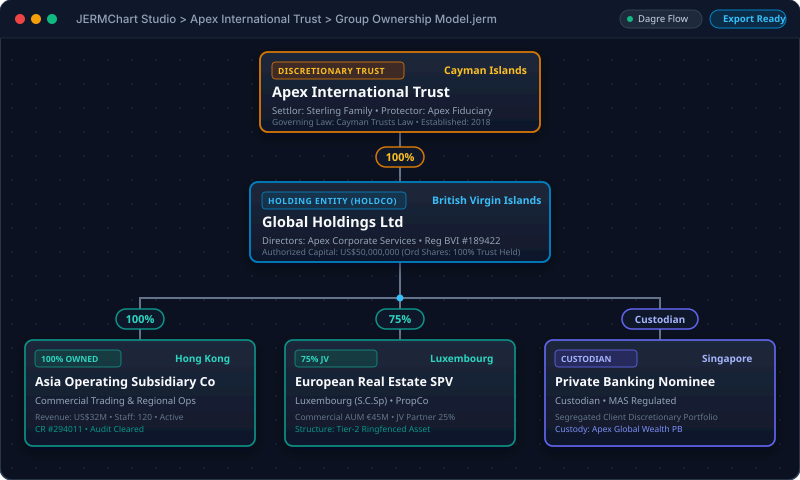

The Problem
Fragile Manual Coordinates
In standard canvas tools, inserting a single intermediate holding company ruins the vertical spacing of the entire branch, demanding tedious manual repositioning of dozens of nodes.
Eliminate manual Visio align-and-distribute drudgery. JERMChart calculates deterministic hierarchical layouts for complex trusts, funds, and multi-tier corporate holdings — engineered specifically for legal counsel, fiduciary trustees, and family offices.

General-purpose drawing tools force lawyers, trust officers, and family office analysts to waste hours nudging boxes and rerouting elbow connectors whenever a holding percentage changes or an entity is added.
In standard canvas tools, inserting a single intermediate holding company ruins the vertical spacing of the entire branch, demanding tedious manual repositioning of dozens of nodes.
SaaS chart applications store highly confidential ultra-high-net-worth ownership charts, beneficial ownership registries, and settlor identities on third-party multi-tenant cloud servers.
JERMChart compiles parent-child fiduciary relationships into a directed acyclic graph, solving optimal tier assignments, node spacing, and edge routing automatically in milliseconds.
From corporate formation to annual compliance reporting, JERMChart provides institutional tools tailored specifically for fiduciary structures.
Deterministic, layered tree layout engine optimizes vertical hierarchy, balances branches, and minimizes connector crossings across trusts, holding companies, and operating subsidiaries.
First-class models for Discretionary Trusts, Foundations, Protected Cell Companies (PCCs), LLCs, Partnerships, and Individuals with custom jurisdiction badges and tax residency tags.
Reorder sister entities and co-subsidiaries horizontally with intuitive drag-and-drop or rank ordering while preserving mathematical layout stability and clean orthogonal connector routing.
Search officers, trustees, and authorized signatories across all structure entities. Click any individual or corporate director to spotlight all associated boards simultaneously.
Generate crisp vector PDF pages, editable PowerPoint (.pptx) diagram shapes, comprehensive multi-tab Excel registers (.xlsx), and high-DPI raster images ready for client board meetings.
Import scanned legal deeds, legacy chart images, or whiteboards. Powered by optional Gemini 2.5 Flash vision analysis, automatically reconstituting nodes, labels, and shareholding percentages.
Family offices and institutional trust companies handle ultra-sensitive beneficial ownership records. JERMChart is architected from line one so your client data never leaves your workstation.
No tracking cookies, no Google Analytics, no telemetry pings, and no crash report beacons. The application executes completely offline with zero background phone-home calls.
Save sensitive structure files encrypted with military-grade AES-256-GCM. Uses PBKDF2 key derivation with cryptographically random salts, ensuring tamper detection and confidentiality.
Full desktop features—including algorithmic graph layout, sibling reordering, director directory, and export generators—operate with 100% functionality on completely isolated, air-gapped systems.
Every line of TypeScript code, layout logic, and cryptographic implementation is open for security inspection on GitHub under the permissive MIT License. Zero proprietary black boxes.
Export flawless deliverables designed to meet the rigorous formatting standards of regulatory bodies, investment committees, and family principals.
Resolution-independent vector output with custom title blocks, confidentiality notices, and automated page numbering.
Exports true PowerPoint editable shapes and connector vectors, allowing further slide deck customization in Microsoft Office.
Generates tabular workbooks summarizing legal entity names, registration numbers, tax jurisdictions, equity splits, and officer lists.
Compact, version-controlled JSON project file secured with AES-256-GCM authenticated password protection for fiduciary archiving.
Download the standalone Windows desktop installer or clone the open-source repository to build locally with Node.js.
Native Windows 10/11 64-bit installer (.exe) with automatic local updates, offline Dagre layout engine, and zero external runtime dependencies.
Download for Windows